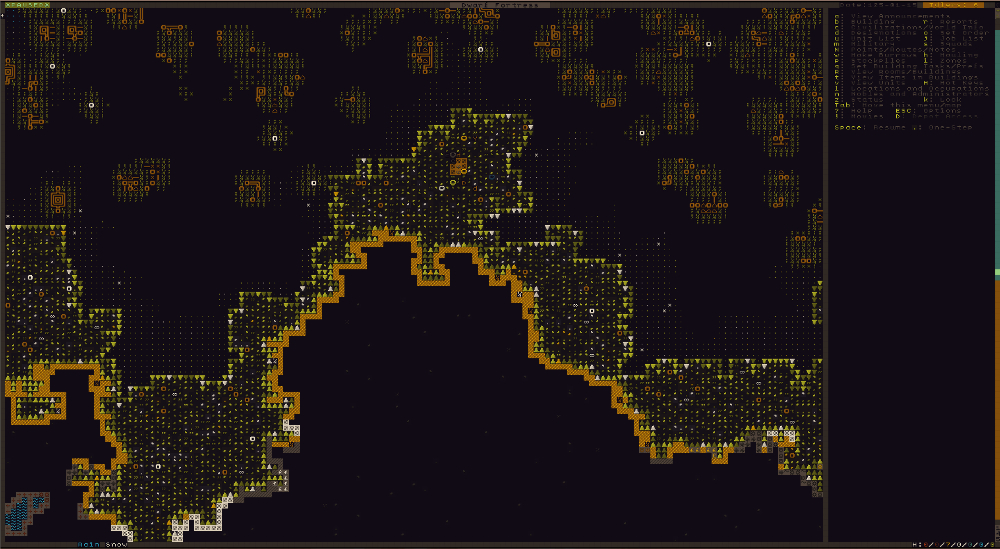
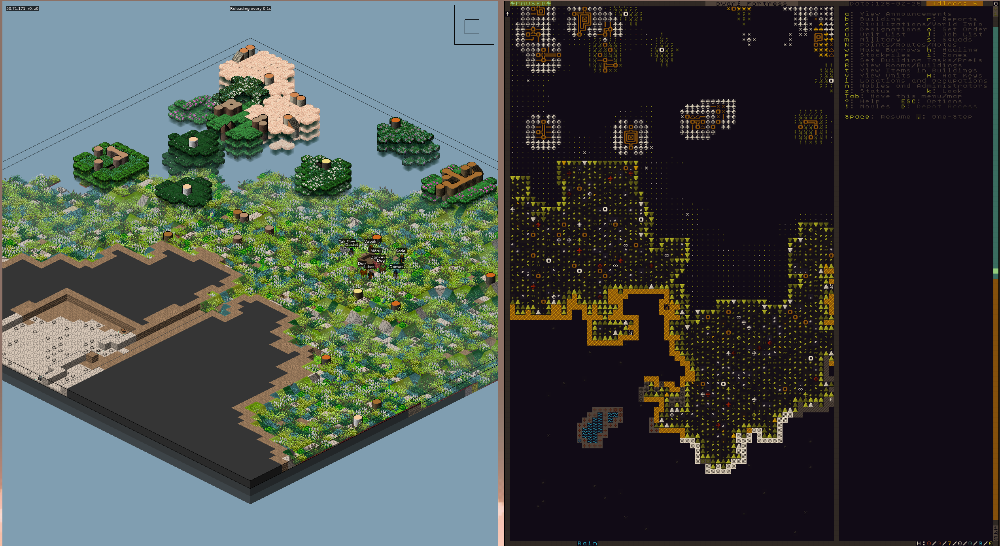

Dwarf Fortress is game with old looking ASCII graphics, procedurally generated worlds, characters and lore. What's not to love about it.

Figure 1: dwarf fortress with Wanderlust tile set
The original tileset hurts my eyes so I switched to Wanderlust
Steps:
data and raw in ~/.dwarffortress with the downloaded ones.
Figure 2: stonesense
Most keys are shown on the sidebar but it's good to call them out here.
tab to change the screen layoutmouse wheel scroll to zoom layout in and outspace to pause and resumek to use arrow keys to look aroundarrow keys move cursor< move up one layer up and > move down one layer. dwarf fortress is a 2D representation of 3D gameF1 center on embark pointd desgination i.e. pick job to doenter to start selection of area of designaion and enter again to close selection-/+ navigating between links~ DFHack if you have it installed